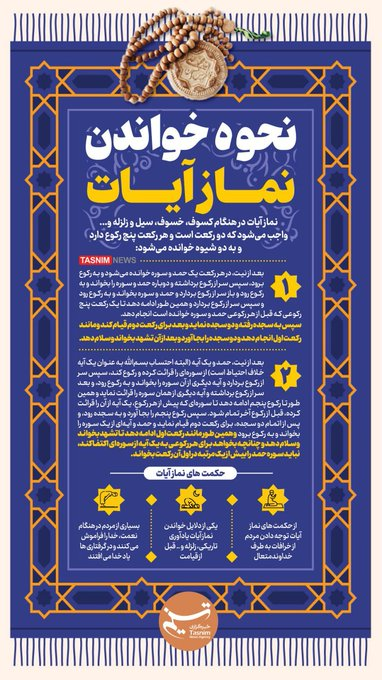
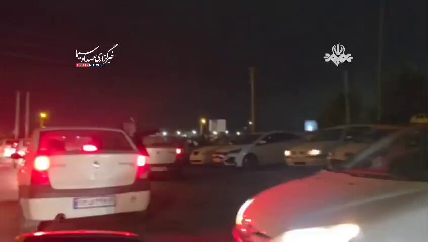
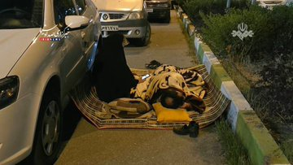
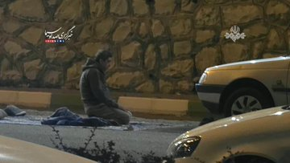
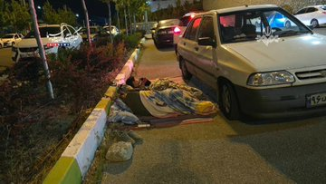
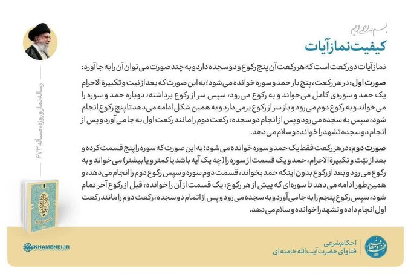
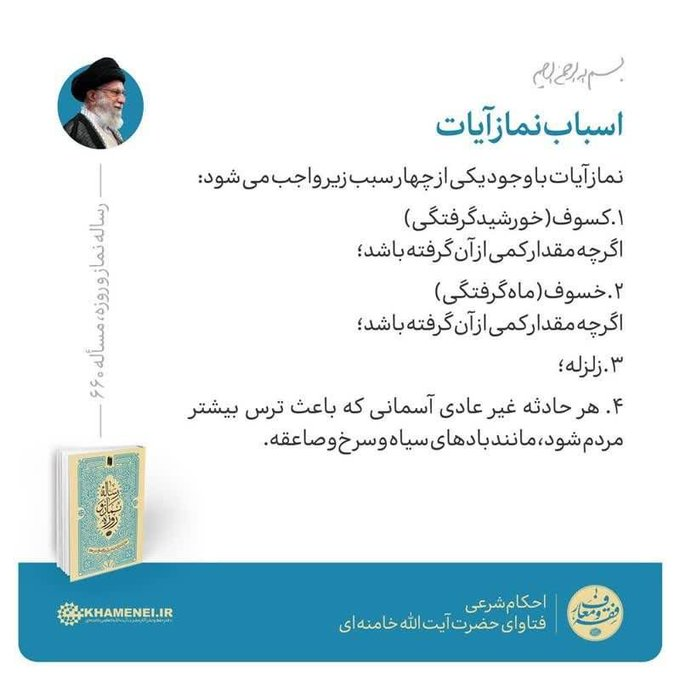
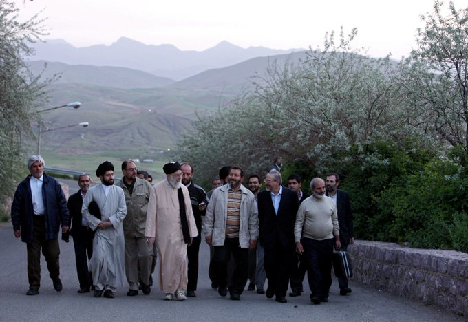

@KellieMeyerNews
📝 原文: The White House X account just shared this image of Venezuela with the words “51st” state.
🇨🇳 译文: 白宫X账户刚刚分享了这张委内瑞拉的图片，上面写着“第51个”国家。

🕒 2026-05-12T23:00:55+00:00
| 来源 | 旧窗口内数量 | 本次新增 | 本次淘汰 | 当前窗口内共有 |
|---|---|---|---|---|
| 推文 + Dawn 新闻 | 0 | 29 | 1 | 28 |
| ARY News | 0 | 0 | 0 | 0 |
注：淘汰数 = 旧窗口内数量 + 本次新增 - 当前窗口内共有












暂无文章。